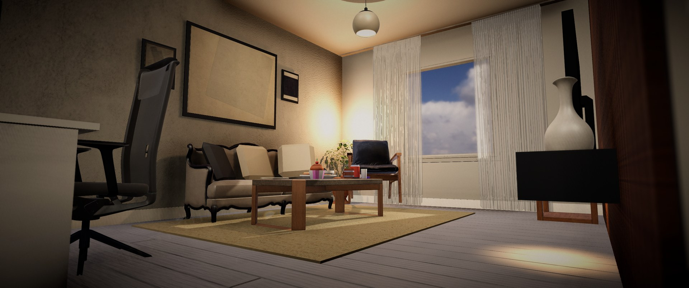
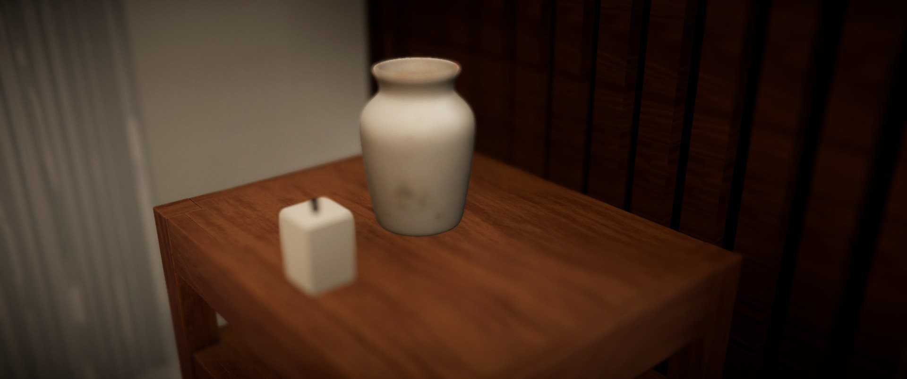

Work 01
Digital Media Technology — 2026
Room
A room built to be looked at rather than entered: the furniture, curtains and window modelled in 3ds Max and lit in Unity as the light drops. The film is one slow camera move with two lines of text — the scene has to hold attention with light, texture and time of day alone.

